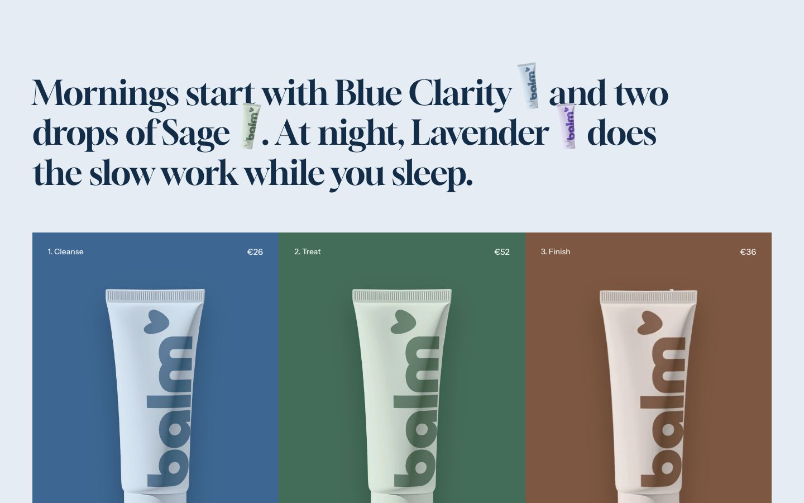
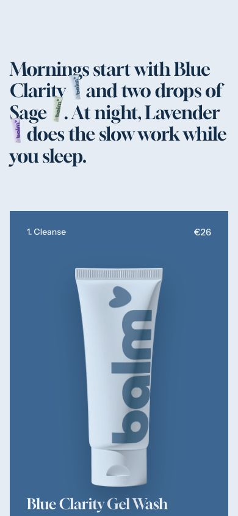

Routine builder
Shoppers build their routine, one product per step, and add it to the cart in one click.
WhereAny template. Not available in the header or footer group.


What it is for
A large paragraph introduces the routine, with small cutouts of products set in the line; under it, one column per step lets shoppers choose a product, and the total of their choice is added in one go.
How it works
In Paragraph, [1], [2] and [3] become the cutouts of
Inline product 1 to 3. Each Step block has a Label
and two or three Products, written as words; choosing one paints the column in that product's color
and brings its cutout in. The summary lists the chosen products, then your Offer text, then the real
total of their prices: the theme computes no discount. The button adds the chosen products together and opens the cart.
Without JavaScript each step is a group of radio buttons in a real add to cart form.
Content tips
- To offer a discount on the routine, create it in your admin (Discounts) and describe it in Offer text. See The routine discount.
- Pick products that are in stock: a step starts on its first available product.
Settings
Section settings (12)
| Setting | Values | Default | Notes |
|---|---|---|---|
| Paragraph | Rich text | Describe the routine in one sentence and set a product in the line... | [1], [2] and [3] become the cutouts of Inline product 1 to 3. |
| Inline product 1 | Product | Empty | |
| Inline product 2 | Product | Empty | |
| Inline product 3 | Product | Empty | |
| Offer text | Text | Empty | Shown after the chosen names. The total is always the real sum of the prices. |
| Button label | Text | Add the routine | |
| Surface |
| Paper | |
| Anchor | Text | Empty | Lowercase words joined by hyphens. Link to this section with #anchor, for example from a menu. |
| Top padding (desktop) | 0 to 200 px, step 2 | 130 px | |
| Bottom padding (desktop) | 0 to 200 px, step 2 | 120 px | |
| Top padding (mobile) | 0 to 200 px, step 2 | 96 px | |
| Bottom padding (mobile) | 0 to 200 px, step 2 | 96 px |
Block: Step
Step block settings (2)
| Setting | Values | Default | Notes |
|---|---|---|---|
| Label | Text | Step | |
| Products | Product list | Empty | Two or three products to choose from. |